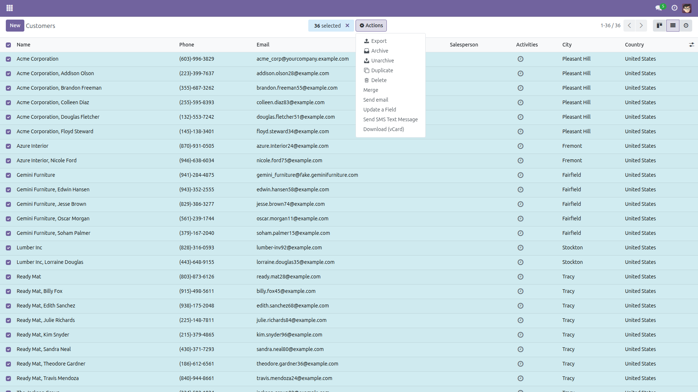
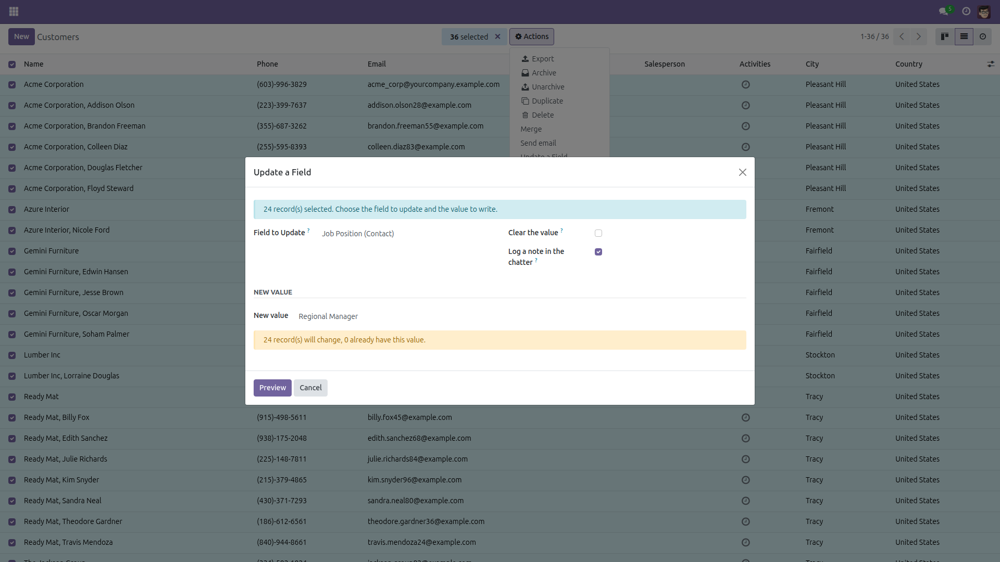
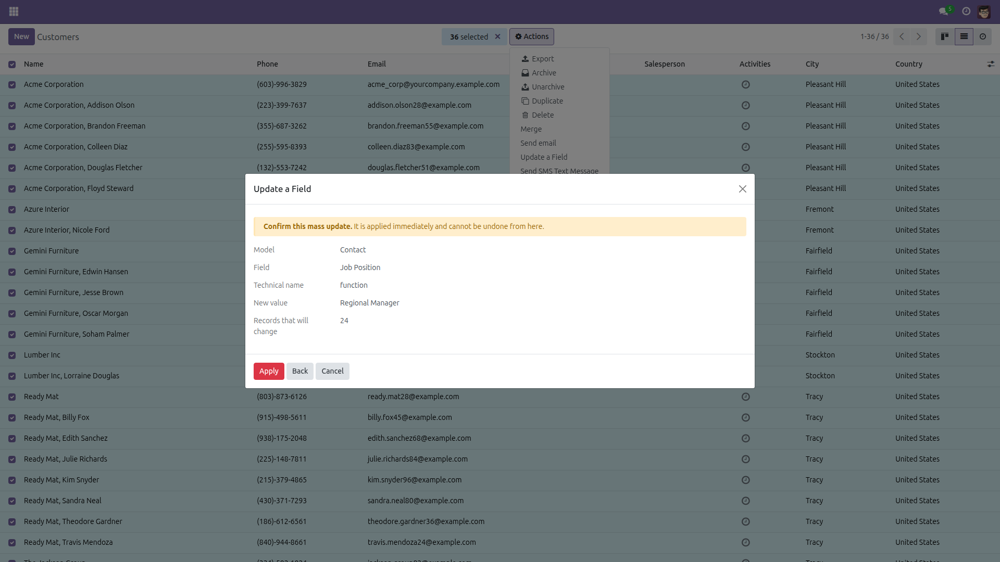
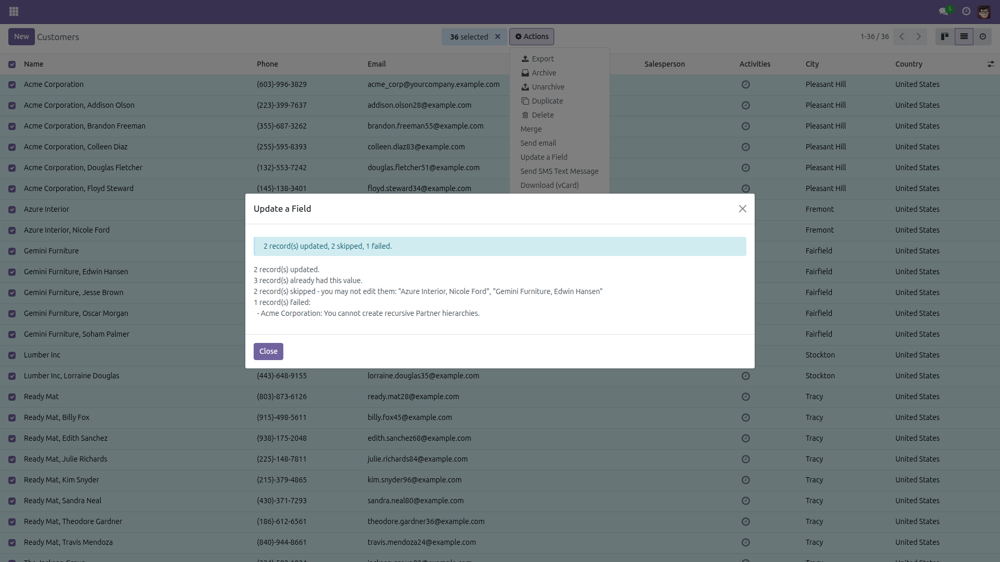

Update a Field on Many Records
One field, three hundred records, one confirmation.
Changing a single field on three hundred records means three hundred clicks — or an export/import round trip that touches columns you never meant to touch. This module adds an Update a Field action to the list view: select the records, pick the field, enter the value, see how many records will really change, confirm, and apply.
Free and open source (LGPL-3), Odoo 14.0 through 19.0.
What it does
- Works on any model — the list of fields is built from the model you are looking at, and the input matches the field: a text box, a number, a date picker, a checkbox, a dropdown for selection fields, a record picker for many2one fields.
- Preview before you commit — the wizard counts the records that will actually change, the ones that already carry the value, the ones you cannot see and the ones that have been deleted meanwhile.
- An explicit confirmation step — the model, the field, its technical name, the new value and the record count are shown on their own screen. Nothing is written before you press Apply, and the server refuses to apply a change that was not confirmed.
- A report you can act on — updated / skipped / failed, with the reason for every skip and the error message of every failure, naming the records concerned.
- Clear a field on purpose — emptying a field is a separate tick box, never something you can do by leaving an input blank. Required fields are refused.
The guards
- Only writable fields are offered — read-only fields, computed fields Odoo itself does not let you edit, non-stored fields, related and delegated fields (they would write on another record than the one you selected) and Odoo's own bookkeeping columns (
id, create_uid, create_date, write_uid, write_date) never appear in the list.
- Never the archive flag —
active is excluded on every model: archiving has its own, reversible tools.
- Never a credential — the user login, and any field whose name looks like a password, a secret, a token or an API key, is refused on every model.
- The field is validated again at apply time — against the model, against the field catalogue and against your own access rights, so a field name forged over RPC is refused rather than written.
- The target cannot be moved — the model and the selected records are captured when the wizard opens and cannot be re-pointed afterwards, so what you confirmed is what gets written. A record chosen as a many2one value must exist and be readable by you.
- Your access rights are respected — the update runs as you, never with elevated privileges. Records you may not see are skipped and counted; records you may not write are skipped, named and counted.
- One failure does not lose the batch — every record is written in its own savepoint, so a validation error on record 7 does not roll back records 1 to 6.
- Traceable — a note is logged in the chatter of each changed record, quoting the old and the new value, on the models that have a chatter.
- Reserved to Settings users — the action is only visible to users with administrative (Settings) access.
Screenshots

Tick the records, then choose Actions → Update a Field.

Pick the field, enter the value, and read how many records will really change.

Nothing is written before this screen: model, field, technical name, value and count.

A real run: two records updated, two skipped because the user may not edit them, one refused by a model constraint — each with its reason.
Installation
- Open Apps, search for Update a Field on Many Records and click Install.
- Only the standard
mail module is required (it is what the chatter note is written to).
Configuration
- None. The action is available immediately on Contacts, for users with Settings access.
- To offer it on another model, a technical user opens Settings → Technical → Actions → Window Actions, edits Update a Field and adds that model to the action bindings. The wizard itself already works on any model.
Usage
- Open a list view and tick the records to change.
- Choose Actions → Update a Field.
- Pick the field. Only the fields you may write on that model are listed.
- Enter the new value, or tick Clear the value to empty the field. The counter under the input tells you how many of the selected records will actually change.
- Press Preview, check the confirmation screen, then Apply.
- Read the report: updated, skipped and failed, with the reason for each.
Limits, stated plainly
- Up to 10 000 records per run. A bigger change belongs to an import or a scheduled action, and the wizard says so instead of silently truncating.
- Supported field types: text, multi-line text, HTML, integer, decimal, monetary, checkbox, date, date & time, selection and many2one. One2many and many2many fields are not offered, nor are binary and company-dependent fields.
- Selection values defined by Python code rather than by a fixed list (for instance a language field) are typed in instead of picked from a dropdown; the allowed values are listed in the wizard and validated before anything is written.
- On Odoo 14.0 and 15.0 the record picker for many2one fields also shows a model selector — the client of those versions cannot hide it. Pick the model named in the hint under the input; anything else is refused.
- The chatter note quotes the old and the new value and is visible to everyone who can already read the record, followers included — untick Log a note in the chatter when the value is sensitive.
- The update runs in one request, record by record: a batch of several thousand records keeps the dialog open for a while. There is no background job.
- The update is not undoable from the wizard. What it changed is visible in the chatter of each record, on the models that have one.
License: LGPL-3 · Source on GitHub · Issues and contributions welcome.